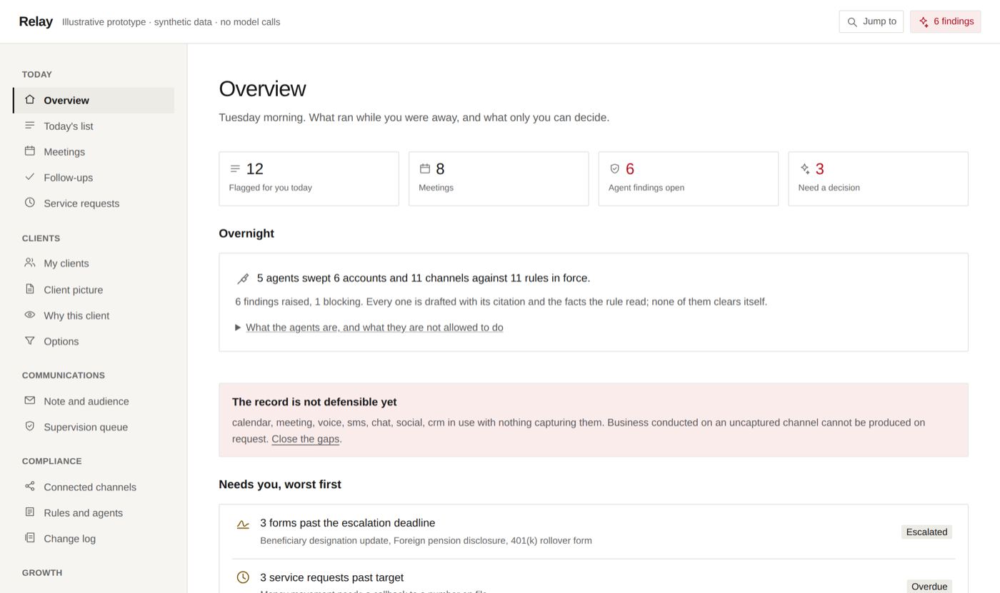
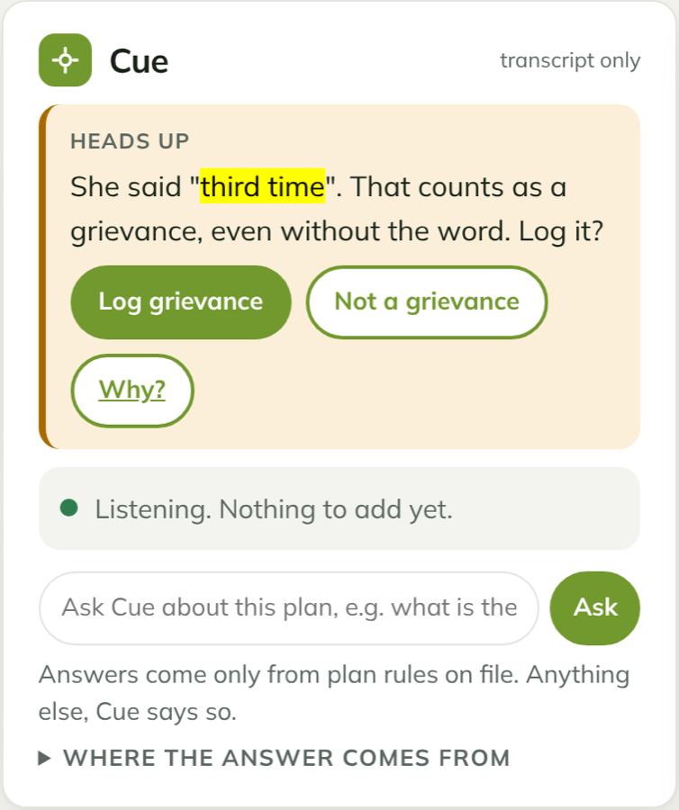

Prototype · no model calls
Relay
Agents that prepare a financial advisor's next actions. They read the client book, cite every claim, and stop at the human gate.
22agents
406/406opportunities found
369tests passing
VALUED takes an AI idea to production through six gates. It starts by asking whether the work needs AI at all, and it does not stop at launch.
WHY VALUED EXISTS
The model is the part everyone plans for. The expensive mistakes sit on either side of it, and that is where VALUED spends most of its gates.
Each failure on the left is what a gate on the right exists to prevent.
"Across the three products I built, the model was never the hard part. Deciding what deserved AI, and proving it kept working for every user after launch, was. VALUED turns those lessons into six gates any team can run."
Nik Jain, on why he built VALUED
THE FRAMEWORK
Each gate is run by an agent. It asks you a decision, applies one framework, hands you one artifact, and checks the governance questions for that stage. Pick a gate to see it.
| Work or decision | How often | Cost today | Cost of getting it wrong |
|---|---|---|---|
| Answer a benefit question | Many times a day | Minutes per lookup | A wrong quote, a repeat call |
| Spot a complaint | Daily | Often missed | A missed regulatory deadline |
| Reset a password | Daily | Seconds | Low |
Illustrative rows. In a real case every figure is measured or marked assumed.
Built for the step after an insight: turning one flagged client opportunity into an action an advisor can approve.
Mapped 12 stages of an advocate's shift before choosing any AI; 11 are on the desk.
Four copies of the same routing and guardrail code were drifting apart across products.
The model never decides: eligibility, ranking and every compliance verdict are code.
Rules first, no model in the prototype. Plan rules held as a graph, so answers follow every exception. 0 off-path figures in 66 checked answers.
Routes each use case to the cheapest model tier that clears its bar. Costs are modelled, not measured.
Labels record what the person meant, never what the system said.
300 test households and 585 messages; the answer key is computed without importing any of the code it tests.
195 labelled call turns across English, Spanish and interpreter calls, including complaints made without the word.
Three hand-written test sets: guardrails 42, model contract 12, judge validation 30.
It never sends, and nothing clears its own findings: an agent prepares, a person accepts.
Never speaks to the member or decides coverage. A care or coverage dispute stops it and brings in a supervisor.
Agents refuse any action that changes something unless it is explicitly allowed.
| Gate | Overall | Group A | Group B | Bar |
|---|---|---|---|---|
| Escalations caught | 0.91 | 0.98 | 0.00 | 0.97 |
| Answers with a source | 1.00 | 1.00 | 1.00 | 1.00 |
| Gap between groups | 0.98 | under 0.05 | ||
Illustrative numbers. The bars are set before anything is built.
The eval caught 53 of 85 retirement opportunities being missed, before the fix.
Adding Spanish calls showed release 2 escalated none of the Spanish calls that needed it. Release 3 passes 8 of 8 gates.
The guardrail gate runs on every change: 1.00 of harmful requests caught, 0.92 precision.
Its learning loop can only propose stricter rules on its own; loosening one needs a person.
Shadow mode, a 5% canary for three days, signed promotion, a kill switch per behaviour.
Latency and cost targets exist in configuration, with no live data yet.
THE REFERENCE PRODUCTS
The gates came out of building these three. Every number on this page comes from running their code, on synthetic data, with no users.

Agents that prepare a financial advisor's next actions. They read the client book, cite every claim, and stop at the human gate.

Six rule-based agents beside a Medicare Advantage member-service advocate on a live call. They suggest; the advocate decides. Cue never speaks to the member.
The shared AI platform under four of my products: model routing, guardrails, retrieval, agents and tool connections.
WHAT VALUED PRODUCES
For each gate: what we decided, what we chose not to do, the number that backs it, and the governance status. Real decisions from each product, in the workflow's output format.
RUN IT ON YOUR CASE
Describe a case in one line. The workflow runs the six gates in order, then a build step that turns your decisions into a PRD and a working prototype. At each one it drafts a table, then asks you at most two questions, and only ones you own: priorities, risk appetite, facts only you know. Everything else comes back as a recommendation: the options, their trade-offs, our preference and why. You make the call; it records it and moves on.
Who, what problem, what constraint. Anything it assumes is marked as assumed.
At AI-fit, three scorers rate value, feasibility and risk in parallel.
At most two questions per gate, recommendation first.
Decision, cited source, a draft to approve, and an audit log. Its evals release or block it.
Every requirement has a test; the evals define done. Plus a one-page brief.
> /valued regional bank, contact centre under cost pressure, 30 AI ideas, plan in 6 weeks [V] Value · done [A] AI-fit · scoring 12 use cases on 3 lenses
An example case, to show the format.
QUESTIONS
Value, AI-fit, Labels, User-in-the-loop, Evals, Deploy and drive. The order is the point: value and fit come before any model, and the work does not end at launch.
No. CureCue's plan and members, Relay's clients and the example case are all synthetic. The numbers are real results of running the code on that data.
Not yet, on purpose. They prove the rules, the gates and the evals first; a model would sit behind them, and would have to pass the same gates. Conduit is the layer a model call would come through.
No. I built the products first. VALUED names the gates I kept using, so the next product can start from them.
Six gate files with every decision and who made it; a PRD with goals, metrics, requirements and acceptance tests, the AI behaviour spec, release gates with real results, rollout and governance, and a build plan written for a coding agent; a prototype you can click, gated by its own evals; and a one-page brief. Whether the prototype calls a model is your call at AI-fit: rules only, rules decide and a model drafts from the cited source, or a model proposes and rules guard escalation.
No. It recommends, showing the options, their trade-offs, its preference and what would change its mind. Decisions that are yours (priorities, risk appetite) come to you as a question; the brief records who decided what, and every governance item still open.
See the gates on Relay, CureCue and Conduit, or run it on your own case.